1 Before you start
This guide is for programmers who extend RPG Enemies in C#. It is built around the pack's seams: the interfaces, and
the abstract or virtual base classes, where your code plugs in without editing any pack file. The Manual
(RPGEnemies_Manual.pdf) describes what the pack does; its Integration and Authoring chapters are the reference behind
this guide. The examples are real scripts in Samples/Extending that compile with the pack, and the next chapter makes
a new action from a script template, start to finish, without touching a pack file.
1.1 Map of the seams
| Extension point | You implement or subclass | Why | Ch. |
|---|---|---|---|
| A new move, start to finish | EnemyAction, from a script template |
Your own action on your enemy | 2 |
| Behaviours | EnemyAction, PlayAnimationAction |
A move the pack doesn't have | 4 |
| Animator states of your own | Nothing: Add State… in the Clip Mapping | A named state for every character | 2 |
| Questions the AI asks | EnemyConsideration |
Score your game's own state | 5 |
| How an action is picked | BaseActionDecider |
A different selection rule | 3 |
| Kinds of attack | AttackData, AttackAction |
Beams, grabs, multi-stage casts | 6 |
| Projectiles | Projectile |
Homing, bouncing, splitting shots | 7 |
| Your player | SimpleCombatTarget, ICombatTarget |
What enemies see and chase | 8 |
| Your damage system | IDamageable, INormalizedHealth, IGuardState |
Enemy hits reach your health code | 8 |
| Guards and armour | IDamageInterceptor |
Change hits before they land | 8 |
| Factions, friendly fire | ITeamRule |
Decide who can hurt whom | 8 |
| Reflecting shots | IProjectileReflector |
Send projectiles back | 8 |
| Movement | EnemyMoverBase |
Your own locomotion | 9 |
| Animation | IEnemyAnimator, IUpperBodyAnimator |
Your own animation setup | 9 |
| Guard stance | IGuardPoseSource |
A guard pose for your player | 9 |
| Senses | EnemySenses |
Stealth, senses of your own | 10 |
| Group tactics | GroupCoordinator |
Your rules for whose turn it is | 10 |
| Encounters | EnemySpawner |
Fights started by your scripts | 10 |
| Enemy-wide rules | Enemy, DifficultyProfile |
Weak points, difficulty stats | 10 |
| Feedback output | IFeedbackOutput |
FMOD, Wwise, networking | 11 |
| Your own feedback | EFeedbackMoment.Custom |
Effects for your gameplay | 11 |
| Game logic and UI | Enemy.Spawned and other events |
Health bars, music, quests | 12 |
| Awareness icons | AwarenessIndicator, or your own UI |
Your own "?" and "!" | 12 |
1.2 Assemblies, namespaces and the rules
The core framework compiles into the assembly TinnyStudios.UtilityAI (UtilityAI/Scripts/Core, namespace
TinnyStudios.AIUtility) and the pack into TinnyStudios.RPGEnemies (RPGEnemies/Scripts/Runtime, namespace
TinnyStudios.AIUtility.RPGEnemies): the assemblies say UtilityAI, the namespaces AIUtility. The editor tools, demo
and samples have assemblies of their own (.Editor, .Demo, .Samples.Extending); copy from the demo and the samples
rather than referencing them. No shipped assembly or asset references them either, so you can delete Demo and
Samples: the build and the enemies keep working (the Manual's Overview lists what Demo holds). Scripts without an
assembly definition compile into Assembly-CSharp, which sees the core and the pack automatically; an assembly
definition of yours references both:
{
"name": "MyGame.Enemies",
"references": [ "TinnyStudios.UtilityAI", "TinnyStudios.RPGEnemies" ]
}
Warning: Keep your scripts out of
Assets/TinnyStudios: a script there compiles into the pack's assembly (the nearest assembly definition above it), and a pack update replaces the folder. Keep them out of the pack's namespaces too: insidenamespace TinnyStudios.AIUtility…, the nameEditormeans the pack'sEditornamespace.
A pack update replaces the pack's files, so every seam here is a subclass, an interface, an event or a static setting,
and your code stays in your own folder. Put your subclasses on Prefab Variants of your own, in place of the pack's
component. Never add to the pack's enums (EEnemyFlag, EEnemyValue, EAttackType, EEnemyAnim, ETeam,
EFeedbackMoment): assets store them by number, and an update replaces their files. A new question is a consideration,
a new animation a state of your own (Add State… in the Clip Mapping keeps it in your folder,
Your first custom action, end to end), a new feedback moment EFeedbackMoment.Custom with a key of your own, a new team a cast
number. Every Unity message (Awake, Update, ...) on a class you can subclass is protected virtual: override it and
call base.
Tip: To swap a component for your subclass and keep its settings, drag your script onto its Script field with the Inspector in Debug mode.
Your action types show up in the Behaviour Library (Tools ▸ TinnyStudios ▸ RPG Enemies) as soon as they compile:
Your action types lists every EnemyAction subclass of yours that is not abstract and is outside the pack's folders,
even before an enemy uses it, and Add puts a new one on your enemy (Your first custom action, end to end). Once on your
enemy prefabs, your actions are listed in their role's group, and the New Enemy wizard offers them too.
[BehaviourRole("…")] on the class picks the group: one of BehaviourRoles (BehaviourRoles.MeleeAttacks, ...) files
it with the pack's, and any other text makes a group of its own. Without it, a subclass of a pack action takes its
base's role, an attack its Attack Data's, and a direct subclass of EnemyAction goes under Special. Your
[Description("…")] attribute (System.ComponentModel) describes it, even on a subclass of a pack action, which
otherwise is described as its base. [PairsWellWith(…)] fills its Pairs well with, in place of the pack's table:
behaviours by the name the library lists them under, whole roles (BehaviourRoles.MeleeAttacks), roles of your own, or
action types (typeof(ShieldWallAction)), with Why = "…" leading the tooltip. Use it more than once to list more; a
subclass without one uses its base class's.
Which clock each system uses
| Clock | Used by |
|---|---|
| The agent's clock | Actions: Elapsed, DeltaTime, cooldowns and loops. UtilityPlanner.Speed scales it, so it slows an enemy's decisions and action timers, not its movement, stagger or senses |
Time.time, Time.deltaTime |
Enemy, EnemySenses, Health, the movers, SimpleCombatTarget, EnemySpawner |
| Replaceable | Projectile: Update calls Advance(Time.deltaTime); override it for another clock |
2 Your first custom action, end to end
This chapter takes one new move from an empty script to Play mode: a Shield Bash for My Soldier, a Prefab Variant of the Melee Soldier in your own folder. A script template writes an action that already works, the Behaviour Library puts it on your enemy, and the Clip Mapping gives it an animation state of its own. You never open a file of the pack's, so a pack update leaves every part of it working. The later chapters explain each part in depth.
| Step | Where | What you get |
|---|---|---|
| Create the script | Create ▸ TinnyStudios ▸ RPG Enemies ▸ Scripting ▸ Enemy Action | ShieldBashAction.cs, a working melee move |
| Add it to your enemy | Behaviour Library ▸ Your action types | A Shield Bash under My Soldier's Actions |
| Say when it runs | Its inspector: Add Has Target, Can See Target | It only runs in a fight |
| Give it an animation state | Enemy Animator ▸ Clip Mapping ▸ Add State… | A ShieldBash state, playing the pack's Lunge clip |
| Pick the state | The action's Animation State | It plays ShieldBash |
| Try it | Play mode and F1 | Shield Bash wins at 0.80 |
| Update the pack | Nothing to do | It keeps working |
You need My Soldier: right-click Prefabs/Enemies/Melee Soldier, choose Create ▸ Prefab Variant, and move the variant
into your folder, here Assets/MyGame (the Customization guide's first chapter shows it step by step). And a scene to
try it in: a NavMesh and a player with a Simple Combat Target (the Manual's Quick Start), or the demo scene with My
Soldier dropped into the camp.
2.1 Create the script
- In the Project window, open your folder,
Assets/MyGame. - Right-click in it and choose Create ▸ TinnyStudios ▸ RPG Enemies ▸ Scripting ▸ Enemy Action.
- Type the name,
ShieldBashAction, and press Enter. As with Unity's own C# Script, the file name becomes the class name, and the root namespace of the assembly the script lands in, if it has one, wraps the class. - Wait for the scripts to compile.
The Scripting menu has three more templates. Each one compiles and does something sensible as it is:
| Template | Derives from | Starts you with |
|---|---|---|
| Enemy Action | EnemyAction |
A melee move: its own animation state, an attack token, one hit and a sound cue. This chapter's. |
| Play Animation Action | PlayAnimationAction |
An emote or effect: it stops, plays a state for Duration, and can heal itself at Effect Time (Writing actions). |
| Attack Action | AttackAction |
A new kind of attack: it plays its Attack Data and hits harder when it catches the player mid-swing (New kinds of attack). |
| Enemy Consideration | EnemyConsideration |
A question scored from the distance to the target, with its own Create menu entry (Writing considerations). |
Note: A script can't land in the pack's folders by mistake. When the Project window shows one of them, the template writes the script in your folder instead (the last one you saved in with the pack's tools, or
Assets), and a note over the Project window says so. If your folder has an assembly definition, it must referenceTinnyStudios.RPGEnemiesandTinnyStudios.UtilityAI(Before you start).
2.2 What the template gives you
ShieldBashAction is a complete melee move. The comment at the top of the file lists the steps below; then come two
attributes for the Behaviour Library and the settings you tune in the Inspector (tooltips left out here):
// The Behaviour Library shows this text, and lists the action under this role:
// one of BehaviourRoles, or a name of your own.
[System.ComponentModel.Description(
"Steps in and hits whatever is in front of it. Say what your action does here.")]
[BehaviourRole(BehaviourRoles.MeleeAttacks)]
public class ShieldBashAction : EnemyAction
{
[Header("Animation")]
[AnimatorState] public string AnimationState;
public EEnemyAnim FallbackAnimation = EEnemyAnim.Attack;
[Min(0.1f)] public float Duration = 1.2f;
[Header("Hit")]
public float MaxDistance = 2.5f;
[Range(0, 1)] public float HitTime = 0.45f;
public float Damage = 10f;
public float PoiseDamage = 20f;
public float Knockback = 2f;
public float Reach = 1.2f;
public float Radius = 1f;
public bool UseAttackToken = true;
public FeedbackCue HitCue = new FeedbackCue();
private bool _hitDone;
private bool _timedToHit;
// The settings a new one starts with when you add it in the Editor.
private void Reset()
{
Weight = 0.8f;
CooldownDuration = 3f;
}
| Field | Default | What it does |
|---|---|---|
| Name, Weight, Cooldown Duration | Shield Bash, 0.8, 3 s | Every action's: its name in F1 and in feedback keys, the most it can score, and the seconds before it can run again. Reset() sets the last two. |
| Animation State | (none) | The Animator state it plays over Duration. [AnimatorState] makes it a menu of the states every character has. |
| Fallback Animation | Attack | What a character with no clip for that state plays instead. |
| Duration | 1.2 s | How long the move lasts. |
| Max Distance | 2.5 m | Further than this from its target, CanRun rules it out. |
| Hit Time | 0.45 | When the hit lands, as a fraction of Duration: 0.54 s in. The clip's own hit frame lands then too. |
| Damage, Poise Damage, Knockback | 10, 20, 2 | The hit. With Damage 0 it hits nothing, for an emote. |
| Reach, Radius | 1.2 m, 1 m | Where the hit sphere is centred in front of the enemy, and its size. |
| Use Attack Token | On | It waits for its turn from its group, as the pack's attacks do. |
| Hit Cue | Empty | Sounds and effects where the hit lands. |
Then the four methods every action overrides (Writing actions has their life cycle):
// CanRun: before the action is scored, on every re-evaluation. Quick code checks only:
// its considerations do the rest.
protected override bool CanRun()
{
if (!Ctx.HasTarget || Ctx.DistanceToTarget > MaxDistance)
return false;
return !UseAttackToken || Coordinator.CanTakeToken(Ctx);
}
// OnActionBegin: once, when the action is chosen. Take what it needs, stop,
// and play the animation.
protected override void OnActionBegin()
{
_hitDone = false;
// Another enemy may have taken the last token since CanRun.
if (UseAttackToken && !Coordinator.TryTakeToken(Ctx))
{
FailOnNextUpdate();
return;
}
Mover.Stop();
// The clip is timed so its hit frame (found when a clip is dropped on an Attack
// state) lands with the hit. A character that can't time it, or has no clip for
// the state, plays it fitted to Duration instead.
_timedToHit = Anim != null && Anim.PlayAttack(AnimationState, Duration * HitTime,
Duration * (1f - HitTime));
if (!_timedToHit)
PlayState(AnimationState, FallbackAnimation, Duration);
}
// OnActionUpdate: every update while it runs. Return Running to keep going,
// Completed when done, or Failed to give up.
protected override EActionStatus OnActionUpdate()
{
FaceTarget();
if (!_hitDone && Elapsed >= Duration * HitTime)
{
_hitDone = true;
// The rest of a timed clip, its follow-through, plays out over the rest
// of Duration.
if (_timedToHit)
PlayAnim(EEnemyAnim.Attack);
Hit();
// A parry staggers the enemy, which ends this action.
if (Enemy.IsStaggered)
return EActionStatus.Failed;
}
return Elapsed >= Duration ? EActionStatus.Completed : EActionStatus.Running;
}
// OnActionEnd: once, however it ends (completed, failed, interrupted or staggered).
// Give back what Begin took.
protected override void OnActionEnd()
{
if (UseAttackToken)
Coordinator.ReleaseToken(Ctx);
}
Hit() and GetFeedbackMoments close the class; they are shown with the sound, below. OnSetup is there too, empty,
for caching components once Ctx is ready.
2.3 Add it to your enemy
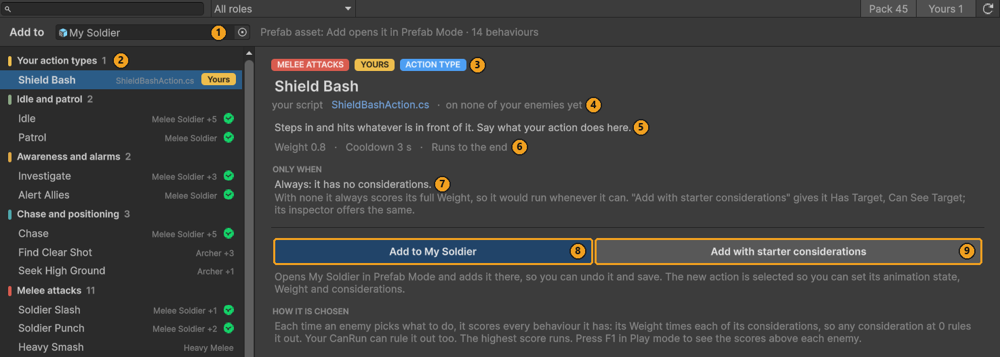
- Select My Soldier in the Project window.
- Open Tools ▸ TinnyStudios ▸ RPG Enemies ▸ Behaviour Library, or press Add Behaviour… on its Enemy component. Add to reads My Soldier (1).
- At the top of the list, Your action types (2) lists every action script of yours: every class deriving from
EnemyActionthat is not abstract, is in a file of its own name, and is outside the pack's folders. It lists them as soon as they compile, before any enemy uses them. Pick Shield Bash. Its name is the class name less "Action". - Read what the library took from your code: the role chip from
[BehaviourRole]and the ACTION TYPE chip (3), the script, which opens when you click it (4), the[Description]text (5), and the Weight and Cooldown ofReset()(6). It has no considerations yet (7). - Press Add to My Soldier (8). A prefab in the Project window opens in Prefab Mode first, so the change can be
undone. A child called Shield Bash, with a
ShieldBashActionon it, goes under Actions and is selected; a second one would be Shield Bash 2. Add with starter considerations (9) also does the next step. - Save the prefab (Ctrl+S).
2.4 Say when it runs
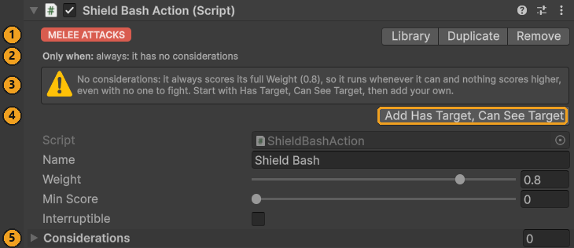
An action with no considerations always scores its full Weight: it runs whenever CanRun allows, and nothing scores
higher, even with no one to fight. The inspector says so.
- With Shield Bash selected, read the header: its role (1) and Only when: always (2).
- The warning (3) offers the pack's starter considerations. Press Add Has Target, Can See Target (4).
- Only when now reads Has Target × Can See Target, and Considerations (5) lists the two.
They are the pack's shared assets from Data/Considerations, used as they are. An action that plays an Attack Data
(IAttackAction) also gets In Attack Range. CanRun already checks the distance and the token, so these two are
enough. To add more, drag them in from Data/Considerations. Before you tune one, press Make Unique on its row: the
copy goes to a My Soldier Considerations folder next to your prefab, and the pack's asset stays as it is.
2.5 Give it an animation state

The pack's base Animator has no ShieldBash state, and you don't add one to it by hand. Add State… adds a state of your own for every character, and keeps it in your folder.
- Select My Soldier's root and open Enemy Animator ▸ Clip Mapping. Press Add State… under Your states (1).
- Name (2):
ShieldBash. It is checked as you type: letters, digits and underscores, starting with a letter, and not a name the pack already uses or one of your states has. A name that won't do says why. - Kind (3): One shot plays once, then back to walking. Loop loops until another animation plays, Hold keeps its last frame.
- Attack (4): ticked. Its hit frame is detected when you drop a clip, and it is listed with the attacks. Your action times the clip so that frame lands with its hit.
- Falls back to (5): what a character with no clip of its own plays. For an attack it starts on Its own attack: each character plays the first attack clip it has (a creature's Attack, the Melee Soldier's Slash1, the Heavy Melee's HeavySmash, and so on), so none stands idle.
- Upper body too (6): off. It is for code that plays a state over the legs' walk, as the guard does.
- Saved in (7):
Assets/MyGame/Extra Animator States.asset (new): an Extra Animator States asset next to your prefab, made for you. It is never saved inside the pack. - Press Add State (8). The state goes into your asset and into the shared base Animator, and every character plays its fallback until it has a clip of its own. Ctrl+Z takes it out again.
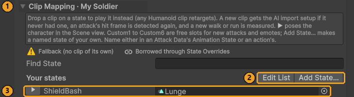
Now give My Soldier a clip for it:
- My Soldier still plays the Melee Soldier's animation set. Press Make Unique at the top of the Clip Mapping, which now reads Clip Mapping · My Soldier (1). (Or choose Make Unique and replace when the drop asks.)
- Drag the pack's Lunge clip,
Models/04_Duelist/Duelist_Anim_Lunge, onto ShieldBash (3). Any Humanoid clip works: the pack's, the Asset Store's or yours. Its hit frame is detected, since the state is an attack. - Press ▶ on the row to pose My Soldier in it.
Edit List (2) selects your Extra Animator States asset, where you rename, change or remove your states.
2.6 Pick the state
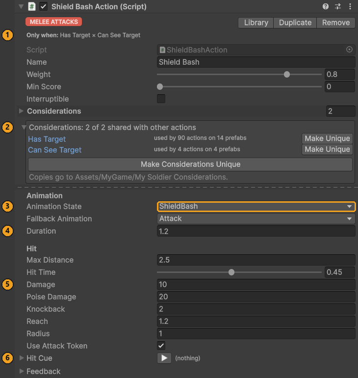
- Select Shield Bash under Actions.
- Open Animation State (3) and pick ShieldBash. Your states are listed first, under Your states, in every state menu: an action's, and an Attack Data's.
- Save the prefab.
The action now has everything: when it runs (1, 2), what it plays (3), and its timing and hit (4, 5). Hit Cue (6) is its sound, below.
Open the Behaviour Library again and pick the Shield Bash now listed under Melee attacks: a behaviour of yours on My Soldier (1, 2 below), with its considerations (3). Its Needs line checks your state as it checks the pack's (4): a green tick for its own clip, yellow for a borrowed one, red when a character would play Idle. From here you can add your tuned Shield Bash to your other enemies, and the New Enemy wizard offers it too.
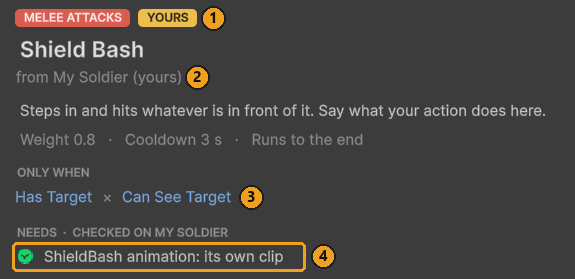
2.7 Try it (F1)
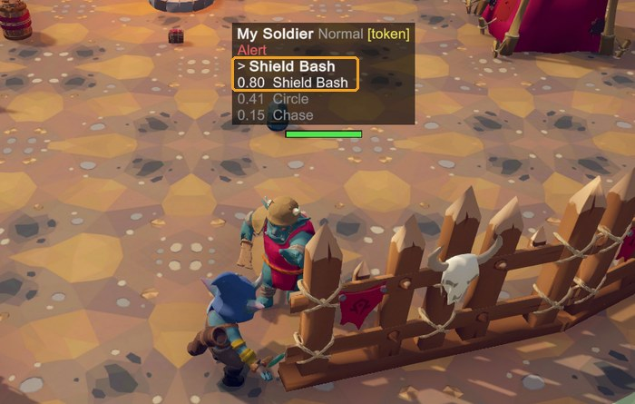
- Put My Soldier in your test scene, or in the demo's camp, press Play and then F1.
- Walk up to it. Above it, F1 shows > Shield Bash, the action it runs, and 0.80 Shield Bash, its score: its Weight, 0.8, times Has Target and Can See Target, both 1. Circle and Chase score less.
- To watch the animation, select the model (the object with the Animator) and open Window ▸ Animation ▸ Animator: the base layer plays ShieldBash, with the Lunge clip.
The bash hits whatever is in front of it 0.54 s in, and a perfect block staggers My Soldier, as the pack's attacks do.
2.8 Change it
The settings are fields on the action, so each enemy has its own. Select Shield Bash and change:
- Its damage: Damage, Poise Damage (stagger) and Knockback (5 in the picture of the finished Shield
Bash).
MakeDamagescales them by the enemy's difficulty, as for the pack's attacks. - Its wind-up: the hit lands Hit Time × Duration seconds in (4 there). A longer Duration slows the whole move; a higher Hit Time moves the hit later. The clip follows: it plays faster or slower so its own hit frame, the one the Enemy Animator's Hit Markers list for ShieldBash, lands with the hit, and its follow-through fills the rest of Duration.
- Its name: Name is what F1 shows and what feedback profiles key its moments by. Renaming it cuts it off from profile entries under the old name (Feedback from code).
In the script:
- The defaults of every new Shield Bash are the field values, and Weight and Cooldown in
Reset(). - The library's text and group come from the two attributes.
[BehaviourRole]takes one ofBehaviourRoles(MeleeAttacks,Defence,Personality, ...), which files it with the pack's behaviours, or any other text, such as[BehaviourRole("Shield moves")], which makes a group of its own. A third,[PairsWellWith], fills its Pairs well with:[PairsWellWith("Guard", BehaviourRoles.MeleeAttacks, Why = "It bashes from behind a raised guard.")]names behaviours or whole roles,[PairsWellWith(typeof(ShieldWallAction))]action types of yours, andWhyleads the tooltip. - A wind-up the player can read. The pack's attacks glow while they wind up. Three lines give Shield Bash the same warning:
public Color TelegraphColor = new Color(1f, 0.55f, 0.1f);
// At the end of OnActionBegin, once the animation has started:
SetTelegraph(true, TelegraphColor);
// At the start of Hit(), and in OnActionEnd, which also runs when a stagger cuts it short:
SetTelegraph(false, TelegraphColor);
- A guard breaker. Build the hit first and change it before it is dealt. In
Hit():
var hit = MakeDamage(Damage, PoiseDamage, Knockback);
hit.GuardDamage = 40f; // drains a raised guard fast
var report = CombatUtility.DamageSphere(center, Radius, hit, null, Ctx.Health);
2.9 Its sound, in the Feedback Emitter
Every action has Begin and End cues under Feedback. The template adds a third, Hit Cue, played where the hit lands, and lists it for the Feedback Emitter:
private void Hit()
{
var center = Self.position + Self.forward * Reach + Vector3.up;
if (Damage > 0f)
{
// A hit from this enemy (scaled by difficulty, with its Source and team),
// missing its own Health.
var report = CombatUtility.DamageSphere(center, Radius,
MakeDamage(Damage, PoiseDamage, Knockback), null, Ctx.Health);
// A perfect block (a parry) staggers the attacker, as with the pack's attacks.
if (report.PerfectBlocked > 0)
Enemy.GetParried();
}
PlayFeedback(EFeedbackMoment.ActionEffect, center, HitCue);
}
// Lists Hit Cue in the Feedback Emitter's inspector, so its sounds and effects
// can be set there too.
public override void GetFeedbackMoments(List<FeedbackMomentInfo> moments)
{
base.GetFeedbackMoments(moments);
moments.Add(new FeedbackMomentInfo(EFeedbackMoment.ActionEffect, FeedbackKey, HitCue,
source: this));
}
}
- Select Shield Bash and open Hit Cue. Drop a clip into Clips and a particle prefab into Prefab, and set Camera Shake for a heavy bash. Until then the bash is silent: the template gives it no placeholder.
- Select My Soldier's root. Feedback Emitter ▸ Moments on this character lists the action's three moments, keyed by its Name: Action/Begin ↻ · Shield Bash, Action/Effect · Shield Bash (the Hit Cue) and Action/End · Shield Bash. Each row says where its cue comes from: "on Shield Bash" once the Hit Cue has something, "silent" before.
- In Play mode, the ▶ on a row plays that moment on the spot.
To dress the bash from the character's profile as well, press + on its row: it adds an Action/Effect entry keyed
"Shield Bash" to the emitter's profile. My Soldier starts with the pack's Melee Soldier Feedback, so + asks first, "Add
to the pack's Feedback Profile?": Make Unique and add gives My Soldier a profile of its own that inherits the pack's
(its Parent) and adds the entry there. With Layering set to Add on the Hit Cue, both play.
2.10 After a pack update
A pack update replaces every file in Assets/TinnyStudios/RPGEnemies. Nothing you made is there:
| What | Where it lives | After an update |
|---|---|---|
ShieldBashAction.cs |
Your folder | Untouched |
| The Shield Bash on My Soldier | Your Prefab Variant | Untouched; the variant still gets the pack's fixes to the Melee Soldier |
| Has Target, Can See Target | The pack's shared assets, used as they are | Updated with the pack, still used |
| The ShieldBash state | Your Extra Animator States.asset |
Put back into the new base Animator by itself |
| The Lunge clip on ShieldBash | My Soldier's own animation set, My Soldier.overrideController |
Untouched |
One pack file does hold your state: the shared base Animator, Animation/EnemyBase.controller, which the update
replaces with the pack's own, without ShieldBash. The pack watches for that. When the file is imported, and whenever the
editor loads, it compares the base Animator with your Extra Animator States, adds back anything missing, and logs it:
[RPG Enemies] EnemyBase.controller was replaced (a pack update does that), so your animator states were put back: …
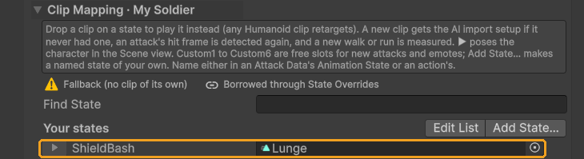
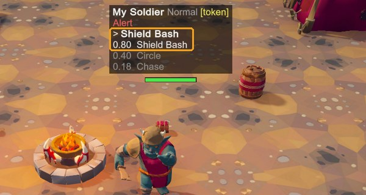
Why the clip survives: each state of yours plays an empty placeholder clip stored inside your asset, not inside
EnemyBase.controller, and every character's Override Controller keys its clip for the state by that placeholder. Put
back with the same placeholder, the state finds every clip you gave it. So every character with its own animation set
(Make Unique) keeps your clip. The pack's own characters, whose animation sets the update replaced too, play the
state's fallback.
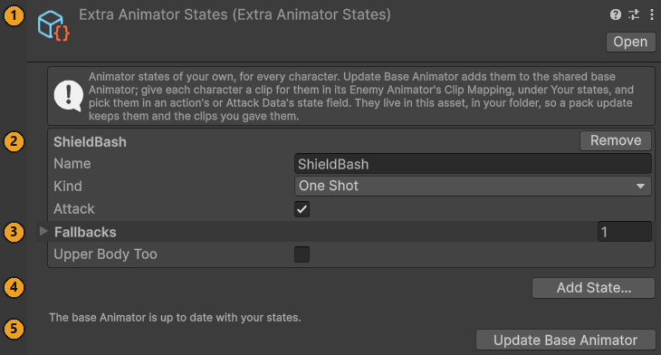
Select your asset (Edit List in the Clip Mapping) to see your states (1, 2), what is wrong with any of them, such as a fallback that is not a state (3), and Add State… (4). Its last line (5) says whether the base Animator is up to date with them. Update Base Animator, there or in Tools ▸ TinnyStudios ▸ RPG Enemies, merges the pack's states with yours by hand and gives every character a fallback clip for any state it lacks; you rarely need it, since the pack does it after every change. An Extra Animator States asset you make yourself (Create ▸ TinnyStudios ▸ RPG Enemies ▸ Extra Animator States) works the same, in any folder of yours.
2.11 Limits
- Hold states. Add State lists a Hold state in the Hold States of the character you added it from, so it keeps the pose, and on no other character (never on one of the pack's prefabs). On your other characters, add its name to Enemy Animator ▸ Hold States yourself, or the pose springs back to walking when the action's time is up.
- Upper body states. A state with Upper body too is played over the legs with
PlayUpperBody(state)and stays until your code callsStopUpperBody(), as the guard does: call it inOnActionEnd. - Names are keys. An action's or Attack Data's state field stores the name. Rename a state in your asset and every character keeps its clip, but pick the new name again in those fields.
- The pack's controller. Keeping the base Animator in step, the pack removes from
EnemyBase.controllerany state without a clip that it did not add. That only matters if someone edited the pack's controller by hand, which an update undoes anyway. - Scripts inside the pack's folders, such as the samples in
Samples/Extending, are not listed under Your action types. Put on an enemy of yours, they are listed in their role's group like any behaviour.
Tip: What you never have to edit. Everything this chapter made is in your folder:
ShieldBashAction.cs,My Soldier.prefab(a Prefab Variant),My Soldier.overrideController(from Make Unique) andExtra Animator States.asset. Not one of the pack's files changed:
- no pack script: not
EnemyAction, not the Behaviour Library's tables of roles and pairs ([BehaviourRole]and[PairsWellWith]fill them), notEnemyAnimatorTools.States(Add State… adds the state);- no pack enum: not
EEnemyAnim,EFeedbackMomentorEEnemyFlag;- no pack asset: not
EnemyBase.controlleror the pack's animation sets, not the Melee Soldier prefab, not the shared considerations, which it only uses.So a pack update replaces the pack's files, and your Shield Bash keeps working.
3 How an enemy thinks
An enemy is a core Utility AI agent with the pack's components around it. This chapter is the model the rest of the guide builds on: what is on an enemy, how it picks an action, and when it changes its mind.
3.1 What is on an enemy
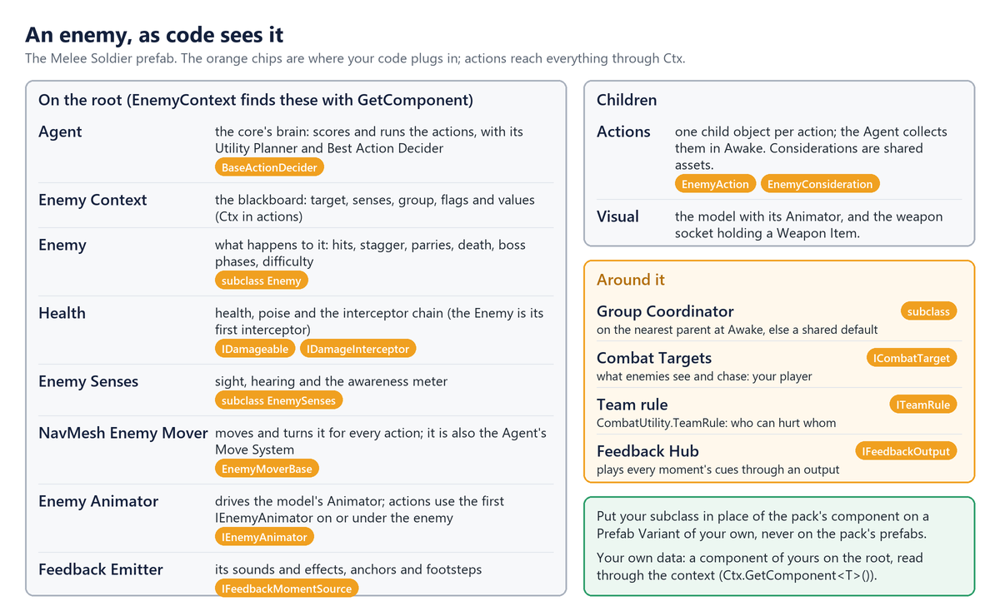
Each part is found where the pack looks for it, so a replacement must sit in the same place. EnemyContext.Initialize
(in Awake, which runs early) caches Enemy, Agent, Health, EnemySenses and EnemyMoverBase from the root, the
first IEnemyAnimator on or under it, and the GroupCoordinator on the nearest parent (else GroupCoordinator.Default).
The Agent collects every action under the root in its Awake and calls each one's Setup. That is sealed: it sets
Ctx, then calls your OnSetup().
Actions and considerations read the situation from that context: Target (only while Alert), HasTarget,
TargetPosition, DistanceToTarget, GetFlag(EEnemyFlag) and GetValue(EEnemyValue) (every question the pack's
considerations ask), LivingAllies, MuzzlePosition and the components above. For data of your own, add a component
to the root and read it with GetComponent; don't edit EnemyContext.
3.2 How an action is picked
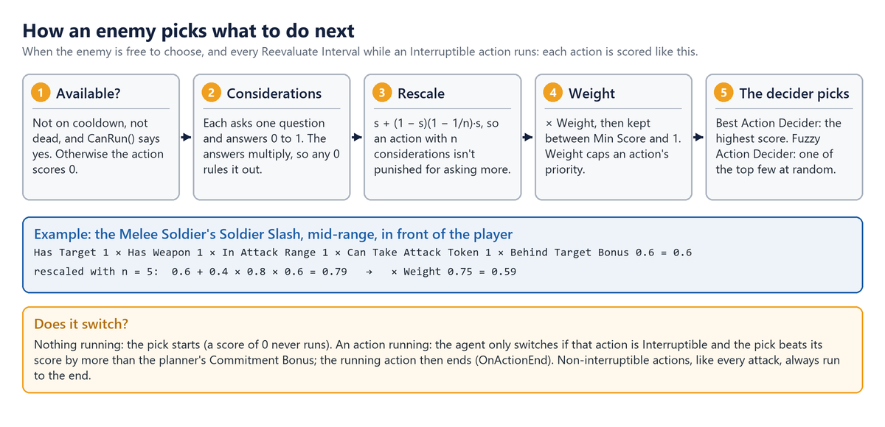
With nothing to do, the Agent scores every action and starts the best. While an Interruptible action runs, it scores
everything again every Reevaluate Interval; Agent.RequestReevaluate() brings the next check forward, and the pack calls
it when an enemy is hit or the player starts a swing. These settings decide when an action runs:
| Setting | On | Effect |
|---|---|---|
Weight |
The action | Multiplies its score, capping its priority. |
Interruptible |
The action | A better action may take over mid-run. Keep it off for attacks. |
CooldownDuration, CooldownOnAbort |
The action | Seconds before it can run again; also after a fail or interruption. |
ReevaluateInterval, CommitmentBonus |
The planner | How often a running action is questioned, and by how much a rival must win. |
Note: Some of these are overwritten at runtime.
Enemy.ApplyDifficultysets the Reevaluate Interval to the difficulty's Reaction Time,AttackActionsets its cooldown from its Attack Data, andDodgeActionandGuardActionswitch Cooldown On Abort on.
The AI Debug View (F1) shows each enemy's running action and three best scores, yours included, and the planner's Show Logs logs every decision. The view runs only in the Editor and in Development Builds, unless its Show In Release Builds is on (the demo scene turns it on).
To pick differently, subclass the core's BaseActionDecider, put it on the enemy's root and assign it to Utility
Planner ▸ Action Decider. You override
IUtilityAction GetAction(Agent agent, List<IUtilityAction> actions): give every action whose IsAvailable() is false
SetScore(0), score the rest with the virtual GetActionScore(action, agent), and return your pick or null. (The
planner's own GetActionScore and GetRescaleScore are obsolete: overriding them changes nothing.)
4 Writing actions
An action is one thing an enemy can do: a component deriving from EnemyAction, on a child object of the enemy next to
its other actions under Actions. Your code says what the action does and when it is possible; its considerations,
set in the Inspector, say when it is worth doing. The quickest start is a script template, Create ▸ TinnyStudios ▸ RPG
Enemies ▸ Scripting ▸ Enemy Action or Play Animation Action, and the Behaviour Library puts the result on your
enemy (Your first custom action, end to end).
4.1 The life of an action
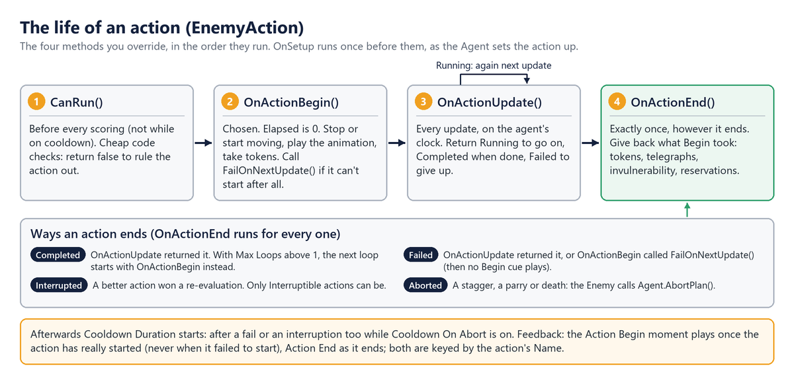
Only these four are yours, plus OnSetup: EnemyAction seals the core's Setup, IsAvailable, OnBegin, OnPerform
and OnEnd, so the plumbing around them (the context, the cooldown, the Begin and End cues) always runs, in this order.
To cache components or settings, override protected virtual void OnSetup(): it runs once, when Ctx is ready and
before the action is first scored. Inside them you have:
| Member | What it is |
|---|---|
OnSetup() |
Yours to override: runs once when the Agent sets the action up (its Awake, or AddAction), with Ctx ready. |
Ctx, Enemy, Senses, Coordinator, Mover, Anim |
The context and the enemy's components (Anim may be null). |
Self, Difficulty |
The enemy's root transform, to move and measure from; its difficulty. |
Elapsed, DeltaTime |
Seconds since the action began, and this update's step, on the agent's clock. |
FaceTarget, TryFindPointInDirection, MoveAwayFromTarget |
Facing, and finding places to go. |
PlayAnim, PlayState, PlayUpperBody, SetTelegraph |
Animation with fallbacks, and the wind-up highlight. |
MakeDamage(amount, poiseDamage, knockback) |
A hit from this enemy, scaled by difficulty, Source and team filled in. |
SetInvulnerable, FailOnNextUpdate, PlayFeedback |
Immunity; giving up from Begin; moments keyed by Name. |
4.2 Example: a leap slam
LeapSlamAction crouches (the player's cue), lunges at the target, slams down hitting everything around where it lands,
and recovers. Like the pack's attacks it takes an attack token, so only a few enemies attack at once. Its fields are
settings (MinDistance, Windup, Damage, Radius, SlamCue, ...) and three for the leap itself: _phase,
_phaseStart and _landing.
public class LeapSlamAction : EnemyAction
{
// 1. Before scoring, every re-evaluation: quick code checks. Considerations do the rest.
protected override bool CanRun()
{
if (!Ctx.HasTarget)
return false;
var distance = Ctx.DistanceToTarget;
return distance >= MinDistance && distance <= MaxDistance
&& Coordinator.CanTakeToken(Ctx);
}
// 2. Chosen: set up, or give up if there is nowhere to land.
protected override void OnActionBegin()
{
if (!Coordinator.TryTakeToken(Ctx))
{
FailOnNextUpdate();
return;
}
// Land on a reachable point just short of the target, not on top of it.
var fromTarget = CombatUtility.Flat(Self.position - Ctx.TargetPosition, -Self.forward);
if (!Mover.TryGetValidPosition(Ctx.TargetPosition + fromTarget, 2f, out _landing))
{
FailOnNextUpdate();
return;
}
Mover.Stop();
EnterPhase(EPhase.Windup);
PlayState(WindupState, EEnemyAnim.Windup, Windup);
SetTelegraph(true, TelegraphColor);
}
// 3. Every update: phases timed on Elapsed, the agent's clock.
protected override EActionStatus OnActionUpdate()
{
var time = Elapsed - _phaseStart;
switch (_phase)
{
case EPhase.Windup:
FaceTarget();
if (time >= Windup)
{
// Move Self through the mover, never this action's own transform.
var toLanding = _landing - Self.position;
Mover.Dash(toLanding, toLanding.magnitude, AirTime);
PlayAnim(EEnemyAnim.Attack, AirTime);
EnterPhase(EPhase.Air);
}
break;
case EPhase.Air:
if (time >= AirTime)
{
Slam();
PlayAnim(EEnemyAnim.Recover, Recovery);
EnterPhase(EPhase.Recovery);
}
break;
case EPhase.Recovery:
if (time >= Recovery)
return EActionStatus.Completed;
break;
}
return EActionStatus.Running;
}
// 4. Ends for any reason (done, failed, interrupted, staggered): undo what Begin set up.
protected override void OnActionEnd()
{
SetTelegraph(false, TelegraphColor);
Coordinator.ReleaseToken(Ctx);
}
private void Slam()
{
SetTelegraph(false, TelegraphColor);
// A hit from this enemy (scaled by difficulty, Source and team filled in),
// missing its own Health.
var hit = MakeDamage(Damage, PoiseDamage, Knockback);
CombatUtility.DamageSphere(Self.position, Radius, hit, null, Ctx.Health);
// Other enemies hear it. Then SlamCue plays where it lands (NewFeedback, PlayFeedback).
CombatEvents.RaiseNoise(Self.position, NoiseRadius, Self.gameObject);
}
}
EnterPhase sets _phase and _phaseStart = Elapsed; keep phases as start times like this, because the core's
ResetPhaseTimer() resets Elapsed too. CanRun keeps the action from scoring while no token is free, but
OnActionBegin must still take one, since another enemy may have taken the last token in between. Whatever Begin takes,
End gives back, also when a stagger cuts the leap short. To try it, add it to a new child of your variant's Actions
(the samples are inside the pack's folder, so the Behaviour Library's Your action types doesn't list them), press
Add Has Target, Can See Target in its inspector (CanRun already checks the distance and the token), and give it a
cooldown.
Warning: Move and turn
SelfthroughMover(MoveTo,Dash,Warp,LookTarget), never the action's owntransform: actions sit on child objects. Don't start movement inOnActionEnd: the Agent stops its Move System right after it. For the same reason, leave the core's Move Data ▸ Required off on enemy actions.
Presets, and actions added at runtime
PlayAnimationAction stops, plays a state fitted to Duration while facing the target, and fires an effect at
EffectTime; Taunt, Roar, Summon, Heal Ally, Hide and Emerge are presets of it. Its hooks are sealed; you override
OnPlay() (false to fail), PerformEffect(), IsStillValid(), OnStop() and EffectPoint, as the Play Animation
Action script template does (it can heal itself at Effect Time, a limited number of times). A potion-drinking enemy,
for example, is a subclass with a Potions count: CanRun() => base.CanRun() && Potions > 0, and a PerformEffect()
that does Potions-- and Ctx.Health.Heal(HealAmount). Per-enemy state like that belongs on the action, a component of
one enemy, never on a consideration. Interrupting the action before Effect Time cancels the effect.
The Agent collects its actions once, in Awake. For an action added later, AddComponent it on a child of the enemy
and call enemy.Agent.AddAction(action), which sets it up. It takes any IUtilityAction and ignores one it already
has. Add considerations with AddConsideration, before or after: the Considerations list exists from the start. Give
it at least one, since an action without any always scores its full Weight.
5 Writing considerations
A consideration answers one question with a score from 0 to 1. An action multiplies its considerations' answers, so a 0
rules it out and anything else makes it more or less likely. The pack's Enemy Flag and Enemy Value considerations ask the
questions listed in EEnemyFlag and EEnemyValue; for any other question, write your own.
5.1 The contract
Derive from EnemyConsideration. It seals the core's GetScore(Agent, IUtilityAction), casts the agent's context for you
and calls the method you override, protected abstract float GetScore(EnemyContext context, IUtilityAction action).
Agents that are not enemies score 0. The Enemy Consideration script template (Create ▸ TinnyStudios ▸ RPG Enemies ▸
Scripting) starts one that scores the distance to the target, with its own Create menu entry.
- Return 0 to 1, through
GetSimulatedScore(value): it applies the Response Curve, which the inspector's Simulated Value slider previews. OverrideGetSimulatedScoreto shape the result further, as Enemy Value does to map it between Min Score and Max Score. - Keep no per-enemy state. One asset serves every enemy and action that lists it, so fields hold settings only.
- Keep it cheap. It runs for every action that lists it, at every re-evaluation (every 0.25 s at Normal difficulty), for every enemy.
- Mind the empty cases.
Targetis null unless the enemy is Alert;DistanceToTargetisfloat.MaxValuewithout a target.
5.2 Example: how tired is the player?
TargetStaminaConsideration reads a component on your player through the target's transform, behind an interface so it
doesn't depend on your player's class. Scoring runs on every re-evaluation of every enemy, so it finds the component
once per target and remembers it:
[CreateAssetMenu(menuName = MenuPaths.CreateAsset + "Samples/Target Stamina",
order = MenuPaths.CreateSamplesOrder + 1)]
public class TargetStaminaConsideration : EnemyConsideration
{
[Tooltip("Score high when the target's stamina is low. Off: high when it is full.")]
public bool HighWhenTired = true;
// Finding a component walks the target's hierarchy, so remember it per target.
// The entry belongs to the target, not to an enemy, so a shared cache is fine here.
private static readonly Dictionary<Transform, IStaminaSource> Sources =
new Dictionary<Transform, IStaminaSource>();
// Statics survive entering Play mode without a domain reload: start each play clean.
[RuntimeInitializeOnLoadMethod(RuntimeInitializeLoadType.SubsystemRegistration)]
private static void ResetStatics() => Sources.Clear();
// One asset is shared by every enemy and action that lists it:
// settings in fields, never per-enemy state.
protected override float GetScore(EnemyContext context, IUtilityAction action)
{
// Target is null unless the enemy is Alert, so check first.
if (!context.HasTarget)
return 0f;
var stamina = FindStamina(context.Target.Transform);
if (stamina == null)
return 0f;
var value = HighWhenTired ? 1f - stamina.StaminaNormalized : stamina.StaminaNormalized;
// Through the Response Curve, so the curve and its preview apply.
return GetSimulatedScore(Mathf.Clamp01(value));
}
private static IStaminaSource FindStamina(Transform target)
{
if (Sources.TryGetValue(target, out var stamina))
return stamina;
// Reach your own component through the target's transform.
stamina = target.GetComponentInParent<IStaminaSource>();
Sources[target] = stamina;
return stamina;
}
}
/// <summary>Implement it on your player's stamina component so enemies can read it.</summary>
public interface IStaminaSource
{
float StaminaNormalized { get; } // current stamina / maximum, 0-1
}
In your folder, right-click and choose Create ▸ TinnyStudios ▸ RPG Enemies ▸ Samples ▸ Target Stamina, and add the
asset to the considerations of an attack on your variant: the attack grows likelier as the player tires. A menuName built on MenuPaths.CreateAsset lists your
asset next to the pack's, as here; a menu of your own works as well, as below.
Your own data, and the action being scored
Data that belongs to one enemy lives in a component on its root, which the consideration finds through the context:
using TinnyStudios.AIUtility;
using TinnyStudios.AIUtility.RPGEnemies;
using UnityEngine;
// Morale.cs, on the enemy's root.
public class Morale : MonoBehaviour
{
[Range(0, 1)] public float Value = 1f;
}
// LowMoraleConsideration.cs: 1 when morale is gone, shaped by the Response Curve.
[CreateAssetMenu(menuName = "My Game/Considerations/Low Morale")]
public class LowMoraleConsideration : EnemyConsideration
{
protected override float GetScore(EnemyContext context, IUtilityAction action)
{
var morale = context.GetComponent<Morale>();
return morale != null ? GetSimulatedScore(1f - morale.Value) : 0f;
}
}
The action argument is the action being scored. The pack's Attack Range consideration reads that action's Attack Data
through IAttackAction (action is IAttackAction attack, then attack.Attack), which is why one asset serves every
attack. Implement IAttackAction on your own attack actions and the pack's attack considerations work with them.
A Composite consideration takes the highest of its children (Any, an "or") or multiplies them (All), with any
consideration type, yours included. The core's Distance Range, Health Threshold and Random Chance work on enemies too,
because EnemyContext implements ITargetDistanceContext and IHealthContext. Derive from the core's Consideration
directly only for a question that needs no enemy, as Composite does.
6 New kinds of attack
AttackAction plays any Attack Data with tokens, combos, difficulty, parries and feedback built in. For an attack the
data can't express (a beam, a grab, a multi-stage cast), subclass AttackData and AttackAction, and override only
what differs. The Attack Action script template (Create ▸ TinnyStudios ▸ RPG Enemies ▸ Scripting) overrides every
hook below, calling base, and makes one change: more damage when the hit catches the target mid-swing. Give it an Attack
Data of your own: drop one of the pack's into its Attack field and press Make Unique under it, which copies it,
and its combo if you like, into your folder.
6.1 The phases
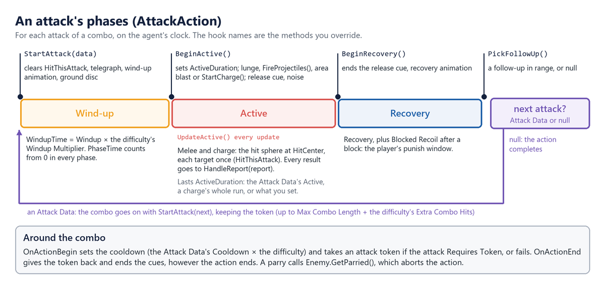
| Override | Runs | By default |
|---|---|---|
StartAttack(AttackData) |
Each attack of a combo starts | Wind-up animation, telegraph, ground disc |
BeginActive() |
Wind-up over | Sets ActiveDuration; lunge, shots, blast or charge; release cue |
UpdateActive() |
Every active update | The melee or charge hit sphere, then HandleReport |
HandleReport(HitReport) |
Each damage result | Parry: GetParried(); hit: impact; block: recoil |
BeginRecovery() |
ActiveDuration is up |
Ends the release cue; recovery animation |
PickFollowUp() |
Recovery over | A Follow Up in range, at its chance; null ends |
FireProjectiles(), StartCharge() and MakeAttackDamage() (every hit, scaled by the weapon and the difficulty) are
virtual too. Subclasses also get
PhaseTime, HitThisAttack, EnterPhase(EPhase), and a settable ActiveDuration and AreaCenter.
6.2 Example: a beam
BeamAttackData adds BeamDuration, TickInterval, Length, BeamRadius and TurnSpeed, and makes a new asset a
Projectile attack with no Projectile Prefab, so the release plays at the muzzle. BeamAttackAction overrides the active
phase; a plain Attack Data in the same action still plays the usual way, and Attack Range reads the beam's Max Range:
public class BeamAttackAction : AttackAction
{
// The attack playing now as a beam, or null for a plain Attack Data.
private BeamAttackData Beam => CurrentAttack as BeamAttackData;
// After the base's animation, release cue and noise, stay active for the whole beam.
protected override void BeginActive()
{
base.BeginActive();
if (Beam == null)
return;
ActiveDuration = Beam.BeamDuration;
_direction = Self.forward;
_nextTick = 0f;
}
// Every update while active: turn and draw the beam, and hurt what it touches on each tick.
protected override void UpdateActive()
{
if (Beam == null)
{
base.UpdateActive();
return;
}
var start = Ctx.MuzzlePosition;
if (Ctx.HasTarget)
_direction = Vector3.RotateTowards(_direction, Ctx.Target.AimPoint - start,
Beam.TurnSpeed * Mathf.Deg2Rad * DeltaTime, 0f).normalized;
var length = Reach(start); // a raycast: walls stop it, characters don't
DrawBeam(start, start + _direction * length);
if (PhaseTime < _nextTick)
return;
_nextTick += Beam.TickInterval;
// Each tick hits again: forget who this attack hit, then damage along the beam.
HitThisAttack.Clear();
var hit = MakeAttackDamage();
hit.Direction = _direction;
for (var distance = Beam.BeamRadius; distance < length + Beam.BeamRadius;
distance += Beam.BeamRadius * 2f)
HandleReport(CombatUtility.DamageSphere(start + _direction * distance,
Beam.BeamRadius, hit, HitThisAttack, Ctx.Health));
}
// HandleReport clears Blocked and PerfectBlocked for beams, so a guard neither staggers
// nor knocks back the caster. BeginRecovery and OnActionEnd call base, then hide the line.
// (The fields and the LineRenderer helpers are left out here.)
}
OnActionBegin takes the token (or fails) and sets the cooldown from the Attack Data, and OnActionEnd gives the token
back: override either and call base. A parry makes HandleReport call Enemy.GetParried(), whose stagger aborts the
action at once, so check Enemy.IsStaggered after it. To replace BeginActive rather than extend it, call
EnterPhase(EPhase.Active), set ActiveDuration and call BeginReleaseFeedback() yourself.
7 Projectiles, throwables and weapons
Subclass Projectile for shots that home, bounce or split, Throwable for things to lob that do more (a sticky bomb, a
net), and WeaponItem for weapons that do more (a torch that lights up in hand). Your code can also pick up, throw,
equip and drop them the way enemies do.
7.1 Firing and flying
Instantiate any Projectile prefab and call Launch(Vector3 velocity, DamageInfo damage, Transform owner); nothing
moves until you do. The velocity is in metres per second; the damage is the hit it carries, so build it with
MakeAttackDamage() in an attack or NewDamage on your player to get the Source and team right. The owner is the
shooter's root: the shot passes through its colliders, and a reflector aims back at it. From your player:
arrow.Launch(direction * 30f, combat.NewDamage(20f, 10f), transform).
Each frame, Update calls Advance(Time.deltaTime): the shot ages (expiring after Lifetime), falls by Gravity, asks
Steer for its velocity, then sweeps a sphere ahead. The sweep skips the owner, dead damageables and damageables the team
rule protects; on a hit it tries TryReflect, then Impact. Subclasses can set Velocity, read Owner and
WasReflected, change Damage (the hit it carries: a shot that grows stronger as it flies, or splits its damage; keep
IsProjectile set when you replace it), and override:
| Member | To |
|---|---|
Launch(velocity, damage, owner) |
Pick a target or change the damage once, when fired (call base). |
Steer(Vector3 velocity, float deltaTime) |
Return this frame's velocity: turn towards a target, wobble, speed up. |
TryReflect(RaycastHit hit) |
Add deflection rules. The default asks an IProjectileReflector on the hit object. |
Impact(RaycastHit hit) |
Bounce, stick or split. The default damages what it hit (or explodes), plays the impact, detaches its effects and destroys it; skip base to keep it alive. |
Expire(), Update() |
Act when Lifetime runs out; for another clock, call Advance(deltaTime) yourself. |
Example: a homing shot
HomingProjectile picks a target once, when fired, and turns towards it as it flies. Sent back by a guard, it homes in
on whoever fired it.
public class HomingProjectile : Projectile
{
public float TurnSpeed = 120f, SeekAngle = 60f, SeekRange = 25f, HomingDelay = 0.15f;
private ICombatTarget _target;
private Transform _shooter;
private float _homeFrom;
public override void Launch(Vector3 velocity, DamageInfo damage, Transform owner)
{
base.Launch(velocity, damage, owner);
_target = FindTarget(velocity); // the nearest in the cone that it can hurt
_homeFrom = Time.time + HomingDelay;
}
// Every frame before it moves: turn the velocity a little towards what it is homing on.
protected override Vector3 Steer(Vector3 velocity, float deltaTime)
{
if (Time.time < _homeFrom)
return velocity;
Vector3 aim;
if (WasReflected)
{
// Sent back by a guard: home in on the one who fired it.
if (_shooter == null)
return velocity;
aim = _shooter.position + Vector3.up;
}
else
{
if (_target == null || !_target.IsAlive)
return velocity;
aim = _target.AimPoint;
}
return Vector3.RotateTowards(velocity, aim - transform.position,
TurnSpeed * Mathf.Deg2Rad * deltaTime, 0f);
}
// Before a reflector takes it over, remember who fired it (Owner).
protected override bool TryReflect(RaycastHit hit)
{
var shooter = Owner;
if (!base.TryReflect(hit))
return false;
_shooter = shooter;
_homeFrom = Time.time + HomingDelay;
return true;
}
}
FindTarget keeps the nearest living target in the Seek Angle cone that this shot's team may hurt
(CombatUtility.CanDamage). To use it, duplicate a projectile prefab such as Prefabs/Projectiles/Arrow into your
folder and swap its Projectile for HomingProjectile (the Debug-mode tip in Before you start keeps its settings).
Then, on your variant's attack (the Archer's Arrow Shot, say), press Make Unique under its Attack field for a copy
of its Attack Data in your folder, and set your shot as the copy's Projectile Prefab. The pack's own prefab and Attack
Data stay as they are.
A bouncing shot decides in Impact. For a wall (no IDamageable in the hit collider's parents), set
Velocity = Vector3.Reflect(Velocity, hit.normal), move it off the wall (hit.point + hit.normal * Radius) and return
without calling base, so it keeps flying; for a character, call base.Impact(hit).
7.2 Throwables and weapons
A Throwable can be picked up and lobbed: Throwable.FindNearest(position, range) finds a free one, Reserve(owner)
claims it for one character (Release(owner) lets go), PickUp(holdPoint) carries it, and
Throw(target, flightTime, damage, thrower) lobs it to land after flightTime seconds, as ThrowObjectAction does.
Throw uses the whole DamageInfo: its Source and team, and its amounts, where any left at 0 take the throwable's own
Damage, Poise Damage and Knockback. ThrowObjectAction passes MakeDamage(0, 0, 0): this enemy's hit, with the
object's own stats; from your player, use NewDamage. Explosive ones go off on the Neutral team, hurting everyone, the
thrower included.
A WeaponItem has FindNearest, Reserve, Release, Equip(socket, holder) and Drop(velocity); on enemies use
Enemy.EquipWeapon and DropWeapon. An enemy's Melee attacks add its ReachBonus, and scale their damage and poise
by its DamageMultiplier and PoiseMultiplier over the starting weapon's (AttackData.WeaponDamageScale), so a
heavier weapon picked up hits harder. To arm an enemy from code as if it had been built with a weapon, such as a random
loadout for a spawned enemy, call Enemy.SetStartingWeapon(weapon, socket) instead: it records that weapon's
multipliers as the baseline, so its attacks hit as their Attack Data say. EquipWeapon is a pick-up.
Their virtual members, all to override calling base:
| Member | To |
|---|---|
WeaponItem.Equip(Transform socket, Object holder, bool raiseFeedback) |
Act as it goes into a hand. Both Equip overloads end here. |
WeaponItem.Drop(Vector3 velocity) |
Act as it leaves the hand, e.g. put out a torch. |
WeaponItem.Land(float height) (protected) |
Act as a dropped weapon reaches the ground, e.g. stick into it. |
Throwable.PickUp(Transform holdPoint) |
Act as it is picked up. |
Throwable.Throw(Vector3 target, float flightTime, DamageInfo damage, Transform thrower) |
Change the throw. |
Throwable.Land(), Explode(DamageInfo hit) (protected) |
Act where it comes down or blows up: stick, splash, leave a fire. |
Throwable.TakeDamage(DamageInfo info) |
Decide what hits do to it, e.g. a barrel that takes two. |
Throwable.MakeImpactDamage(in DamageInfo thrown) (protected) |
Shape the hit it deals, e.g. by how far it flew. |
A Throwable subclass also reads ThrownDamage, the hit it carries in flight, and Thrower (both protected).
8 Your player and damage system
Enemies need something to see and chase, an ICombatTarget, and something to hurt, an IDamageable. The Manual's
Integration chapter sets up the common case, a player with a SimpleCombatTarget and a Health. This chapter covers the
rest: your own health system, teams and factions, and changing hits before they land.
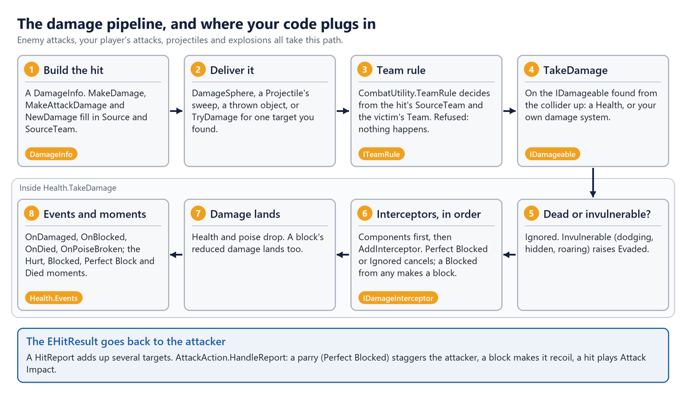
8.1 Your own player and health system
SimpleCombatTarget registers the player, tells enemies what it is doing (the four flags, dodge counting, attack
warnings), makes footstep noise and builds hits (NewDamage, DealDamageInFront), whatever damage system you use. Only
a target that is not a MonoBehaviour, or one you want full control over, needs its own ICombatTarget: eleven members
(Transform, AimPoint, Velocity, IsAlive, HealthNormalized, IsAttacking, IsHealing, IsDodging,
IsBlocking, RecentDodgeCount, Damageable), CombatTargets.Register(this) in OnEnable and Unregister in
OnDisable, and CombatEvents.RaiseAttackStarted and RaiseNoise when it attacks and moves.
For your own health system, implement IDamageable on your health script: Team, IsAlive, transform (lower case,
so a MonoBehaviour already has it) and TakeDamage, plus INormalizedHealth so enemies know how hurt the player is, and
IGuardState (IsGuarding) if it decides blocks. Next to a SimpleCombatTarget it is found automatically (a Health
first, then any IDamageable on the object), or assign it to Damageable Override, or call SetDamageable from
code. The sample HealthBridge, with a float where your system goes:
[RequireComponent(typeof(SimpleCombatTarget))]
public class HealthBridge : MonoBehaviour, IDamageable, INormalizedHealth, IGuardState
{
// Fields: MaxHealth, BlockedDamage (the share a block lets through), BlockAngle.
// Set by your controller while the guard is up. It decides blocks here, and through
// IGuardState the Simple Combat Target reports it to enemies as IsBlocking.
public bool IsGuarding { get; set; }
public bool IsParrying { get; set; } // the guard's first moments: a block is a parry
public ETeam Team => ETeam.Player; // a team the enemies can hurt
public bool IsAlive => _health > 0f;
public float HealthNormalized => MaxHealth > 0f ? _health / MaxHealth : 0f;
public EHitResult TakeDamage(DamageInfo info)
{
if (!IsAlive)
return EHitResult.Ignored;
// Report guards to the attacker: a parry staggers it, a block makes it recoil.
var result = EHitResult.Hit;
if (IsGuarding && !info.Unblockable && FacesAttacker(info))
{
if (IsParrying)
{
Raise(EFeedbackMoment.PerfectBlocked, info, EHitResult.PerfectBlocked);
return EHitResult.PerfectBlocked;
}
result = EHitResult.Blocked;
info.Amount *= BlockedDamage;
Raise(EFeedbackMoment.Blocked, info, result);
}
// Your health system takes the damage here, e.g. myHealth.ApplyDamage(info.Amount).
_health = Mathf.Max(0f, _health - info.Amount);
// Health raises these moments; with your own health system, raise them yourself.
if (result == EHitResult.Hit)
Raise(EFeedbackMoment.Hurt, info, result);
if (!IsAlive)
Raise(EFeedbackMoment.Died, info, result);
return result;
}
// Raise plays the moment with FeedbackHub.Play, keyed by info.Attack's Display Name;
// FacesAttacker checks that info.Source is within BlockAngle in front.
}
The attacking enemy reacts to what you return: Hit, its impact; Blocked, it recoils; PerfectBlocked, it is
parried and staggered (not after an Area attack); Ignored, nothing (return it while your player dodges). Because
HealthBridge is an IGuardState, SimpleCombatTarget.IsBlocking follows its IsGuarding: enemies see the same
guard your damage code uses, and you don't set the flag twice. Hits find the damageable from the collider they touch
(CombatUtility.GetDamageable(collider): GetComponentInParent<IDamageable>(), remembered per collider), so put it on
or above the colliders. A collider with no damageable is remembered as such for a couple of seconds, so a damageable
added or removed while playing calls CombatUtility.InvalidateDamageables() from OnEnable and OnDisable, as
HealthBridge and the pack's Health do, and hits find it at once.
8.2 Teams, factions and interceptors
Every hit in the pack asks CombatUtility.CanDamage(attacker, victim), which asks CombatUtility.TeamRule: by default a
team never hurts itself and everyone can hurt Neutral. TakeDamage itself doesn't check teams, so for a raycast or any
direct hit of your own call CombatUtility.TryDamage(victim, info), which skips null, dead and protected victims. For
factions, cast numbers beyond Player (0), Enemy (1) and Neutral (2) and install your own rule:
using TinnyStudios.AIUtility.RPGEnemies;
using UnityEngine;
/// The pack's rule, plus an alliance: Bandits and the pack's enemies never hurt each other.
public sealed class AllianceRule : ITeamRule
{
public const ETeam Bandits = (ETeam)10;
public bool CanDamage(ETeam attacker, ETeam victim) =>
!IsAlliance(attacker, victim) && DefaultTeamRule.Instance.CanDamage(attacker, victim);
private static bool IsAlliance(ETeam a, ETeam b) =>
(a == Bandits && b == ETeam.Enemy) || (a == ETeam.Enemy && b == Bandits);
// Statics are reset on entering Play mode, so install it as the game loads.
[RuntimeInitializeOnLoadMethod(RuntimeInitializeLoadType.BeforeSceneLoad)]
private static void Install() => CombatUtility.TeamRule = new AllianceRule();
}
Give a faction's Health.Team and its hits' SourceTeam the cast value from code. The rule also decides whom enemies
fight: EnemySenses.IsHostile asks it about every target, so an enemy only targets what its own team may hurt, and a
faction picks its targets by the same rule. For a rule that isn't about damage (a truce until the player draws a
weapon), override IsHostile (Senses, groups, spawning and difficulty).
For areas, CombatUtility.DamageSphere(center, radius, info, alreadyHit, ignore) damages every damageable in a sphere
once; the overload with a layerMask after info checks only those layers, such as a hurtbox layer. Its buffer grows
as needed, up to 4096 colliders (CombatUtility.MaxSphereColliders), and a hit that sets off another blast, such as an
explosive barrel, is safe.
A Health runs every IDamageInterceptor in order: the components on its own object in component order (found in
Awake), then any added from code with AddInterceptor. Each sees the hit as the one before left it; the first to
return Perfect Blocked or Ignored cancels the hit, and a Blocked from any makes it a block. On an enemy the Enemy
component is an interceptor (its guard blocks through it), so armour placed below it in the Inspector reduces what the
guard let through:
using TinnyStudios.AIUtility.RPGEnemies;
using UnityEngine;
/// Armour: a flat amount off every hit, and less damage from projectiles.
public class Armour : MonoBehaviour, IDamageInterceptor
{
public float Flat = 3f;
[Range(0, 1)] public float ProjectileResistance = 0.5f;
public EHitResult Intercept(ref DamageInfo info)
{
if (info.IsProjectile)
info.Amount *= 1f - ProjectileResistance;
info.Amount = Mathf.Max(0f, info.Amount - Flat);
return EHitResult.Hit; // let it through, reduced
}
}
An interceptor needn't be a component: a spell's ward can be a plain object that returns Ignored while it has charges,
added with health.AddInterceptor(ward) and removed with RemoveInterceptor. A component added after Awake is not
found either, so add it the same way; never add or remove one from inside Intercept. For rules on the whole enemy,
such as a weak point, override Enemy.Intercept and call base to keep the guard; for another kind of guard, override
GuardAction.Block. A projectile that hits your player first asks the IProjectileReflector in the collider's parents:
return true from TryReflect(projectile, out newDirection) and it flies back on your team, faster and stronger.
Note:
MakeDamage,MakeAttackDamageandNewDamagefill in aDamageInfofor you. Built by hand, it needsSource(the attacker's root, so the enemy hit can turn on it) andSourceTeam(it defaults to Player), plusDirection,Point,GuardDamage,UnblockableandAttackas the hit needs.
9 Movement and animation
Actions never move a transform or play an Animator themselves. They call the enemy's mover and its animator, so both can be replaced: root motion, an A* package or a CharacterController for movement; your own Animator Controller or an animation package for animation.
9.1 Your own mover
Derive from EnemyMoverBase, which extends the core's MoveSystemBase, and implement:
| Member | What it must do |
|---|---|
Velocity, IsDashing, IsFlying |
Speed in m/s, dashes included; dashing now; a flyer (3D charges, falls when it dies). |
MoveTo(position, speed), HasArrived(tolerance) |
Path there (called every frame); arrived, or no destination. |
Dash(direction, distance, duration), Warp(position) |
Move fast without pathfinding; move at once (teleports). |
Stop(), SetMovementEnabled(bool) |
Stop (the Agent calls it on every state change); stop for good on death. |
TryGetValidPosition(position, searchRadius, out valid) |
The nearest reachable point, or false. |
Put it on the root, as the Agent's Move System. Multiply speeds by SpeedMultiplier, turn with
RotateTowards(GetFacingDirection(velocity), deltaTime) so LookTarget works, and call base.Awake() and
base.LateUpdate() (they feed the animator). CharacterControllerMover moves with a CharacterController along
NavMesh.CalculatePath corners, without a NavMeshAgent. Its MoveTo stores speed * SpeedMultiplier and re-paths only
when the destination has moved half a metre, since chase actions call it every frame; its Update does the moving:
private void Update()
{
if (!_movementEnabled)
return;
var deltaTime = Time.deltaTime;
Vector3 move;
if (IsDashing)
{
var step = Mathf.Min(deltaTime, _dashTimeLeft);
_dashTimeLeft -= step;
move = _dashVelocity * step;
}
else
{
_velocity = FollowPath(); // towards the next corner, or zero at the end
move = _velocity * deltaTime;
}
_fallSpeed = _controller.isGrounded ? 1f : _fallSpeed + Gravity * deltaTime;
move.y -= _fallSpeed * deltaTime;
_controller.Move(move);
// Faces the LookTarget while strafing, or where it is going.
RotateTowards(GetFacingDirection(Velocity), deltaTime);
}
To use it, remove the NavMesh Enemy Mover, then its NavMeshAgent, add the sample to the root and drag it into the
Agent's Move System. To tweak the pack's own movement instead, subclass NavMeshEnemyMover or FlyingEnemyMover:
their Update is protected virtual, so override it and call base.
SpeedMultiplier is read-only: BaseSpeedMultiplier (the inspector's value, normally 1) times every named speed
modifier. To slow or hurry an enemy from code, set a modifier by name, so effects stack instead of overwriting each
other:
mover.SetSpeedModifier("Frost", 0.5f)sets one (setting the same name again replaces its value);mover.RemoveSpeedModifier("Frost")takes it off, andGetSpeedModifier(name)reads one (1 when not set);Enemykeeps two of its own:Enemy.DifficultySpeedModifier, the difficulty's Move Speed Multiplier, andEnemy.EnrageSpeedModifier, a boss phase's Enrage Speed Bonus.
Movers apply a change from the next MoveTo, which chasing actions call every frame.
9.2 Your own animation
IEnemyAnimator is how actions animate, whatever drives the character:
| Member | What it must do |
|---|---|
SetLocomotion(speed) |
Called every frame by the mover, in m/s. |
Play(EEnemyAnim anim, duration) |
A general animation: Idle, Windup, Attack, Recover, Dodge, Stagger, Death, ... |
PlayState(stateName, duration) |
A named state; false if there is none, and the caller plays a general one. |
PlayAttack(stateName, windup, followThrough) |
A whole attack clip, its hit after windup s; false for separate states. |
HasState(stateName) |
True if the character has its own animation for it; callers pick visuals by it. |
SetTelegraph, Flash, SetTint |
The wind-up highlight, a short flash, a lasting tint. |
Actions, the mover and the Feedback Emitter use the first IEnemyAnimator on or under the enemy, the root first, so
remove the Enemy Animator when you add yours. SimpleAnimatorDriver drives an Animator Controller of your own. Its
PlayState cross-fades to the state if Animator.HasState finds it (else returns false), Play maps each EEnemyAnim
to a state name, and the attack timing works like this:
public bool PlayAttack(string stateName, float windup, float followThrough)
{
// Needs the clip's length to time the hit; false plays the attack's separate states.
var clip = FindClip(stateName);
if (clip == null || !HasState(stateName))
return false;
// Fit the part before the hit into the wind-up, and the rest into the follow-through.
Animator.speed = Mathf.Clamp(clip.length * HitTime / Mathf.Max(0.05f, windup), 0.25f, 4f);
_followThroughSpeed =
Mathf.Clamp(clip.length * (1f - HitTime) / Mathf.Max(0.05f, followThrough), 0.25f, 4f);
Animator.CrossFadeInFixedTime(stateName, CrossFade);
_inAttack = true;
return true;
}
At the hit, AttackAction calls Play(EEnemyAnim.Attack): during the clip the driver switches to
_followThroughSpeed there, and ignores Windup and Recover. With Animancer or another package, keep this shape and swap
the Animator calls. Implement IUpperBodyAnimator too if your animator can layer a state over the legs. And
HumanoidGuardPose follows an IGuardPoseSource (IsGuardRaised, GuardLookTarget) in its parents: Enemy
implements it, and so can your player. The raised guard jolts when it takes a hit: from a Health in its parents, else
from the character's Blocked and Perfect Block feedback moments (your damage system raises them, as HealthBridge
does), or when you call PlayBlockJolt(EHitResult) yourself.
10 Senses, groups, spawning and difficulty
What an enemy notices, whose turn it is to attack, how an enemy enters a fight and how hard it is are classes with virtual methods: subclass them, and use your subclass on your own prefab or group object in place of the pack's.
10.1 Senses
Every Update Interval, EnemySenses looks for targets and fills an awareness meter while one is seen; a full meter makes
the enemy Alert. FindVisibleTarget(out bestDistance) asks IsHostile(target), then IsVisible(target, out distance),
about every registered target. IsHostile asks the team rule whether this enemy's team may hurt the target's
Damageable, so enemies ignore targets they couldn't hurt. GetAwarenessGain(target, distance) says how fast the meter
fills, and HearNoise(position, radius, source) receives every noise (it is public, so you can call it for a noise only
one enemy hears). Override them for stealth, disguises, truces, senses of your own, or targets an enemy should ignore:
using TinnyStudios.AIUtility.RPGEnemies;
using UnityEngine;
/// On your player: how hidden it is.
public interface IStealthy
{
bool InCover { get; } // tall grass, shadow
bool IsCrouching { get; }
}
/// Sees a target in cover only up close, and notices a crouching one more slowly.
public class StealthSenses : EnemySenses
{
public float CoverSightRange = 3f;
[Range(0, 1)] public float CrouchingGain = 0.4f;
protected override bool IsVisible(ICombatTarget target, out float distance)
{
if (!base.IsVisible(target, out distance))
return false;
var stealth = target.Transform.GetComponentInParent<IStealthy>();
return stealth == null || !stealth.InCover || distance <= CoverSightRange;
}
protected override float GetAwarenessGain(ICombatTarget target, float distance)
{
var gain = base.GetAwarenessGain(target, distance);
var stealth = target.Transform.GetComponentInParent<IStealthy>();
return stealth != null && stealth.IsCrouching ? gain * CrouchingGain : gain;
}
}
From code, ForceAlert(target, position) makes an enemy hunt a target at once, ResetAwareness() calms it, and
CombatEvents.RaiseNoise(position, radius, source) makes a noise every enemy in range may hear.
Note: Every Unity message on these classes is
protected virtual:EnemySenses(OnEnable,OnDisable,Update),EnemySpawner(Start,Update),Enemy,Healthand the movers. Override one withprotected overrideand call base, or the enemy stops seeing, hearing, moving or spawning.
10.2 Groups, spawning and difficulty
An enemy joins the GroupCoordinator on its nearest parent in Awake, so instantiate enemies with the group as their
parent. Parenting one later doesn't move it; enemy.JoinGroup(group) does, giving back its token, slot and requests in
the old group (reinforcements joining a fight, or a spawner handing its enemies to a camp). The coordinator's token, slot
and alert methods are virtual (CanTakeToken, TryTakeToken, ReleaseToken, BroadcastAlert, GetSurroundPosition,
FindFreeSlot), and attacks, the Can Take Attack Token consideration and TryTakeToken all ask CanTakeToken:
using TinnyStudios.AIUtility.RPGEnemies;
/// Only one Heavy Melee attacks at a time, however many tokens are free.
public class OneHeavyAtATime : GroupCoordinator
{
public override bool CanTakeToken(EnemyContext member)
{
if (!base.CanTakeToken(member))
return false;
if (HasToken(member) || member.Enemy.Archetype != "Heavy Melee")
return true;
var holders = TokenHolders; // read-only: loop with an index
for (var i = 0; i < holders.Count; i++)
{
if (holders[i] != null && holders[i].Enemy.Archetype == "Heavy Melee")
return false;
}
return true;
}
}
How many members may attack at once is MaxAttackers plus extra attackers. Each member's difficulty asks for its
profile's Extra Attackers through RequestExtraAttackers(member, count) (Enemy.ApplyDifficulty and JoinGroup call
it), and CombineExtraAttackerRequests() turns the requests into RequestedExtraAttackers: by default the most any
member asks for, so one Hard enemy in a Normal camp raises it, and it drops again when that enemy leaves. Override it for
another rule, such as the sum for a horde that grows bolder. ExtraAttackers is yours to set from code; the group allows
the larger of the two.
To spawn an enemy yourself: Instantiate(prefab, position, rotation, group.transform), set its Difficulty before its
Start applies it, PlaySpawnIn(seconds) for the rise out of the ground, and Context.Senses.ForceAlert(target,
position). For a loadout of your own, SetStartingWeapon(weapon) arms it as if it had been built with that weapon.
For waves, EnemySpawner.Begin(target) starts an encounter from a script or a cutscene (a Trigger Radius of 0 leaves it
to code), Target is who it is against, and ResetEncounter() calls it off. Override GetSpawnPoint(index) to choose
where enemies appear, CreateEnemy and RemoveEnemy to make and remove them your way, SpawnOne for another entrance,
and ResetEncounter to reset more of your own, such as doors or music. Enemies can't be pooled or revived: a dead enemy
shuts down for good and an enemy sets itself up only once, so a pool can only hand out enemies that never fought.
Enemy.ApplyDifficulty(profile) is virtual, like Stagger, GetParried, GuardBreak, PlaySpawnIn, Intercept,
JoinGroup and SetStartingWeapon.
For difficulty settings of your own, subclass DifficultyProfile (say, a Poise Multiplier), subclass Enemy, and in
your ApplyDifficulty call base, then read your fields when profile is your type (scale from values stored the first
time, since it runs again whenever the difficulty changes). For a difficulty menu that also reaches enemies spawned
later, use Enemy.Spawned (Events for UI and game logic).
11 Feedback from code
Every gameplay moment is raised through FeedbackHub, which finds its cues (the one set on the action, attack or prop,
else the character's Feedback Profile, else the Feedback Manager's Default Profile) and plays them through an output.
The Manual's Integration chapter explains the system; from code you raise moments of your own, list them in the
inspector, add attach points, and replace the output.
11.1 Raising a moment
A moment is a FeedbackEvent, a small struct: Moment and Key (what happened, and which action, attack or custom id:
profiles can target a key), Owner, Position and Direction (anchors are found under the owner), Intensity (0-1;
cues may scale by it), Index, Result, Instigator, and Cue, Placeholder and Follow (the cue set on the thing
itself, the grey-box visual shown until a cue has one, and what to stay on). FeedbackHub.Play(emitter, e) plays it.
For a moment with an end (a wind-up, a charge, a raised guard), FeedbackHub.Begin(emitter, e) returns a
FeedbackHandle, and FeedbackHub.End(ref handle) stops its loops and attached effects; ending an empty or ended
handle is safe. The emitter may be null: cues set on the event still play.
Actions have helpers that key moments by the action's Name: NewFeedback, PlayFeedback, BeginFeedback and
EndFeedback. Anything else raises EFeedbackMoment.Custom with a key of its own:
using System.Collections.Generic;
using TinnyStudios.AIUtility.RPGEnemies;
using UnityEngine;
/// A spike trap with its own cue, keyed so a profile can dress it too.
public class SpikeTrap : MonoBehaviour, IFeedbackMomentSource
{
public FeedbackCue FireCue = new FeedbackCue();
public void Fire()
{
var e = new FeedbackEvent(EFeedbackMoment.Custom, transform, transform.position)
{
Key = "Spike Trap",
Cue = FireCue,
Placeholder = FeedbackPlaceholder.Burst(1f, new Color(0.8f, 0.8f, 0.8f, 0.6f))
};
FeedbackHub.Play(GetComponent<FeedbackEmitter>(), e);
}
// Lists the moment in the Feedback Emitter's checklist, so it can be given cues there.
public void GetFeedbackMoments(List<FeedbackMomentInfo> moments) => moments.Add(
new FeedbackMomentInfo(EFeedbackMoment.Custom, "Spike Trap", FireCue, true, this));
}
From a UnityEvent, or an animation event on a clip of your own, FeedbackEmitter.PlayCustom(key) raises a Custom moment
with no code. (Events added to the pack's clips live in its import settings, which an update replaces; for the time of a
hit, set the Enemy Animator's Hit Markers instead.) A cue
plays at an anchor: add a FeedbackAnchor with an Id for a point of your own ("Mouth", "Weapon Tip"), and implement
IFeedbackAnchorProvider.GetFeedbackAnchor(anchor) on your character to supply its Weapon and Muzzle, as
EnemyContext does.
Warning: Keys are names. Renaming an action or an Attack Data's Display Name silently cuts it off from the profile entries and Responses keyed by the old name.
11.2 Your own output: FMOD, Wwise or anything else
An IFeedbackOutput plays the cues: int Play(FeedbackCue cue, in FeedbackEvent e, in FeedbackPlacement placement) and
void Stop(int id). Play returns a positive id only when something keeps running (a loop, or an effect attached to a
span moment), so the moment's end can stop it; otherwise 0. The placement gives the position and rotation, what to
follow, the scale, and Sustain for span moments. MiddlewareFeedbackOutput sends sounds to middleware and keeps the
pack's visuals:
public int Play(FeedbackCue cue, in FeedbackEvent e, in FeedbackPlacement placement)
{
var running = new Running();
var manager = FeedbackManager.Instance;
if (!string.IsNullOrEmpty(cue.AudioEvent))
{
// Throttle repeats (Min Interval) the way the built-in output does.
if (cue.TryConsume(Time.unscaledTime))
{
// FMOD: RuntimeManager.CreateInstance(cue.AudioEvent), position it, start it.
// A span moment (Sustain, e.g. a charge) keeps a looping sound until Stop.
running.Sound = placement.Sustain && cue.Loop;
}
}
else if (manager != null)
{
running.BuiltInId = manager.PlayAudio(cue, e, placement); // plain clips: built in
}
// The prefab, camera shake, hit-stop and light: reuse the built-in output's.
if (manager != null)
{
running.VisualId = manager.PlayVisual(cue, e, placement);
manager.PlayExtras(cue, e, placement);
}
// Return an id only when something keeps running, so the moment's end can stop it.
if (!running.Sound && running.BuiltInId == 0 && running.VisualId == 0)
return 0;
if (++_nextId <= 0)
_nextId = 1;
_running[_nextId] = running;
return _nextId;
}
Stop looks the id up, stops the middleware sound and calls FeedbackManager.Instance.Stop for the built-in parts. Put
the component on the Feedback Manager's object and assign it to Custom Output, or set FeedbackHub.Output at
runtime: any IFeedbackOutput, component or not, which wins over Custom Output. For your own camera, handle
FeedbackManager.ShakeRequested with Shake Main Camera off; for multiplayer, turn Hit Stop off, and send
moments from FeedbackHub.Raised, marking replayed ones Remote so they aren't sent again.
12 Events for UI and game logic
Health bars, music, quests and doors only need to know what enemies do, and events tell them:
| Event | Raised |
|---|---|
Enemy.Spawned (static) |
For every enemy as it starts, after its difficulty: placed, spawned, summoned or yours |
Enemy.OnDied, OnPhaseChanged |
When it dies; when a boss phase starts (with the phase) |
Health.Events |
OnDamaged, OnPoiseBroken, OnHealed, OnBlocked (also for Ignored), OnDied |
EnemySenses.StateChanged |
Unaware, Suspicious, Alert, with the old and new state |
EnemySpawner.Events |
OnWaveStarted, OnWaveCleared, OnAllWavesCleared, OnEnemySpawned |
FeedbackHub.Raised (static) |
Every feedback moment on every character, whether or not anything played |
FeedbackEmitter.Played |
Every moment on one character (its Responses do the same in the Inspector) |
- Subscribe at runtime, in
OnEnableorStart: static events are cleared on entering Play mode. - Reach an enemy's parts from
Start: it sets up itsContextinAwake, which may run after yourOnEnable. - Index the registries.
Enemy.All,CombatTargets.All,WeaponItem.All,Throwable.All,IdleSpot.AllandWeaponRack.Allare read-only lists;foreachover them allocates.Enemy.Allincludes the dead: checkIsDead.
An awareness icon of your own. The "?", "!" and "z" over an enemy's head, and its guard shield, are drawn by its
Awareness Indicator child. For icons of your own, subclass AwarenessIndicator: its Awake and LateUpdate are
protected virtual, and its Context reaches Senses and Enemy. For a marker in your game's UI instead, read the
enemy's EnemySenses (State, Awareness from 0 to 1, IsSleeping, or the StateChanged event) and Enemy
(IsGuarding, GuardNormalized), and switch off the Awareness Indicator object on your variant.
12.1 Examples
Combat music can listen to FeedbackHub.Raised for Alert and Lost Target. A boss bar that shows once the boss is alert:
using TinnyStudios.AIUtility.RPGEnemies;
using UnityEngine;
public class BossHealthBar : MonoBehaviour
{
public Enemy Boss;
public GameObject Bar;
public RectTransform Fill; // pivot on the left, scaled on X
private void Start()
{
Bar.SetActive(false);
Boss.Context.Senses.StateChanged += OnAwareness;
Boss.OnDied.AddListener(() => Bar.SetActive(false));
}
private void OnDestroy()
{
if (Boss != null)
Boss.Context.Senses.StateChanged -= OnAwareness;
}
private void OnAwareness(EAwareness previous, EAwareness current)
{
if (current == EAwareness.Alert && !Boss.IsDead)
Bar.SetActive(true);
}
private void Update()
{
if (Bar.activeSelf)
Fill.localScale = new Vector3(Boss.Health.Normalized, 1f, 1f);
}
}
With Enemy.All for the enemies already there, Enemy.Spawned reaches every later one, and it comes after an enemy's
own difficulty, so a menu's choice wins:
using System.Collections.Generic;
using TinnyStudios.AIUtility.RPGEnemies;
using UnityEngine;
public class KillQuest : MonoBehaviour
{
public string Archetype = "Swarm";
public int Kills { get; private set; }
private readonly HashSet<Enemy> _tracked = new HashSet<Enemy>();
private void OnEnable()
{
Enemy.Spawned += Track;
var enemies = Enemy.All;
for (var i = 0; i < enemies.Count; i++)
Track(enemies[i]);
}
private void OnDisable() => Enemy.Spawned -= Track;
private void Track(Enemy enemy)
{
if (enemy.Archetype == Archetype && !enemy.IsDead && _tracked.Add(enemy))
enemy.OnDied.AddListener(() => Kills++);
}
}
using TinnyStudios.AIUtility.RPGEnemies;
using UnityEngine;
public class DifficultyMenu : MonoBehaviour
{
public DifficultyProfile Current;
private void OnEnable() => Enemy.Spawned += Apply;
private void OnDisable() => Enemy.Spawned -= Apply;
private void Apply(Enemy enemy) => enemy.ApplyDifficulty(Current);
public void Choose(DifficultyProfile profile)
{
Current = profile;
var enemies = Enemy.All;
for (var i = 0; i < enemies.Count; i++)
enemies[i].ApplyDifficulty(profile);
}
}
13 Pitfalls and quick reference
13.1 Pitfalls
| Pitfall | Instead | Ch. |
|---|---|---|
| A new action with no considerations | It always scores its full Weight, so it runs whenever it can: press Add Has Target, Can See Target in its inspector. | 2 |
| Your action missing from Your action types | Only EnemyAction subclasses that are not abstract, in a file of their own name, outside the pack's folders, are listed there. |
2 |
A new animation state added to EnemyAnimatorTools.States or to EnemyBase.controller |
An update replaces both: add it with Clip Mapping ▸ Add State…, into an Extra Animator States asset in your folder. | 2 |
| A Hold or Upper Body state of your own that doesn't hold | Add a Hold state to each character's Hold States; stop an Upper Body state with StopUpperBody(). |
2 |
Moving an action's own transform |
Move and turn Self through Mover: actions sit on child objects. |
4 |
Starting movement in OnActionEnd |
Don't: the Agent stops its Move System right after. Leave Move Data ▸ Required off. | 4 |
ResetPhaseTimer() between phases |
It resets Elapsed too: keep start times, _phaseStart = Elapsed. |
4 |
| A token or telegraph never given back | Undo everything Begin did in OnActionEnd, which runs however the action ends. |
4 |
Overriding Setup in an action |
It's sealed: override OnSetup, which runs once Ctx is ready. |
4 |
AddComponent alone for a new action |
Call Agent.AddAction (it ignores an action it already has), and give it considerations (none = full Weight). |
4 |
| Per-enemy state in a consideration | One asset serves every enemy: keep that state in a component on the enemy. | 5 |
| Assuming a target | Target is null unless Alert; DistanceToTarget is float.MaxValue without one. |
5 |
| Tuning a value the pack overwrites | Cooldowns come from Attack Data and Reevaluate Interval from the difficulty; speed goes through named speed modifiers. | 3 |
Assigning SpeedMultiplier |
It's read-only: set a named modifier with SetSpeedModifier, or BaseSpeedMultiplier. |
9 |
A hand-made DamageInfo |
Set Source and SourceTeam (it defaults to Player), or use NewDamage. |
8 |
TakeDamage for your own hits |
It doesn't check teams: call CombatUtility.TryDamage. |
8 |
| A combat target on the Enemy team | Enemies ignore targets their team may not hurt (EnemySenses.IsHostile): put your player on Player. |
8 |
| An interceptor added at runtime | Components are found in Awake: use Health.AddInterceptor. |
8 |
| Your animator next to the Enemy Animator | The first one found (the root first) wins: remove the Enemy Animator. | 9 |
A Unity message written without override (void Update() in a subclass) |
The pack's are protected virtual: write protected override and call base, or you hide the pack's own. |
10 |
| Parenting an enemy to a group later | It picks its group in Awake: pass the parent to Instantiate, or call enemy.JoinGroup(group). |
10 |
| Pooling or reviving enemies | Not supported: a dead enemy shuts down for good. | 10 |
| Renaming an action or Attack Data | Feedback keys are names: profile entries under the old name stop matching. | 11 |
| Static settings from edit-time code | Statics reset on entering Play mode: set TeamRule and subscribe at runtime. |
12 |
foreach over Enemy.All each frame |
It allocates: loop with an index, and skip IsDead enemies. |
12 |
| Editing pack files, enums or prefabs | Updates replace them: subclass, implement, use your own variants, and copy shared assets into your folder before you tune them. | 1 |
Scripts under Assets/TinnyStudios |
They compile into the pack's assembly and are lost on update. | 1 |
| Expecting the AI Debug View in a release build | It runs in the Editor and Development Builds only: tick Show In Release Builds for a build that should show it. | 3 |
13.2 Quick reference
| Seam | Override or implement | Sample |
|---|---|---|
EnemyAction |
OnSetup, CanRun, OnActionBegin, OnActionUpdate, OnActionEnd, GetFeedbackMoments |
LeapSlamAction; the Enemy Action template |
[BehaviourRole], [Description], [PairsWellWith] |
On your action class: its group, its text and its Pairs well with in the Behaviour Library | The templates (the first two) |
ExtraAnimatorStates |
An asset of yours, made by Add State…: animator states for every character | |
PlayAnimationAction |
OnPlay, PerformEffect, IsStillValid, OnStop, EffectPoint |
The Play Animation Action template |
EnemyConsideration |
GetScore(EnemyContext, IUtilityAction), GetSimulatedScore |
TargetStaminaConsideration; the Enemy Consideration template |
BaseActionDecider |
GetAction, GetActionScore, GetRescaleScore |
|
AttackAction, AttackData |
StartAttack, BeginActive, UpdateActive, HandleReport, BeginRecovery, PickFollowUp |
BeamAttackAction; the Attack Action template |
Projectile |
Launch, Steer, TryReflect, Impact, Expire, Update; a settable Damage |
HomingProjectile |
WeaponItem |
Equip(Transform, Object, bool), Drop(Vector3), Land(float) |
|
Throwable |
PickUp, Throw, Land, Explode, TakeDamage, MakeImpactDamage; reads ThrownDamage, Thrower |
|
ICombatTarget, IDamageable, IGuardState |
11 members; Team, IsAlive, transform, TakeDamage; IsGuarding |
HealthBridge |
IDamageInterceptor, ITeamRule |
Intercept(ref info); CanDamage(attacker, victim) |
|
IProjectileReflector, IGuardPoseSource |
TryReflect; IsGuardRaised, GuardLookTarget; HumanoidGuardPose.PlayBlockJolt |
|
EnemyMoverBase |
MoveTo, HasArrived, Dash, Warp, Stop, TryGetValidPosition, ...; SetSpeedModifier |
CharacterControllerMover |
IEnemyAnimator |
Play, PlayState, PlayAttack, HasState, SetLocomotion, tint |
SimpleAnimatorDriver |
EnemySenses |
FindVisibleTarget, IsHostile, IsVisible, GetAwarenessGain, HearNoise |
|
GroupCoordinator |
CanTakeToken, TryTakeToken, ReleaseToken, BroadcastAlert, slots, RequestExtraAttackers, CombineExtraAttackerRequests |
|
EnemySpawner |
GetSpawnPoint, CreateEnemy, RemoveEnemy, SpawnOne, ResetEncounter; reads Target |
|
Enemy, GuardAction |
ApplyDifficulty, Intercept, Stagger, GetParried, JoinGroup, SetStartingWeapon; Block |
|
IFeedbackOutput |
Play, Stop |
MiddlewareFeedbackOutput |
The samples are in Samples/Extending, namespace TinnyStudios.Samples.Extending; BeamAttackAction comes with
BeamAttackData. The templates are under Create ▸ TinnyStudios ▸ RPG Enemies ▸ Scripting, and write your script in
your own folder.